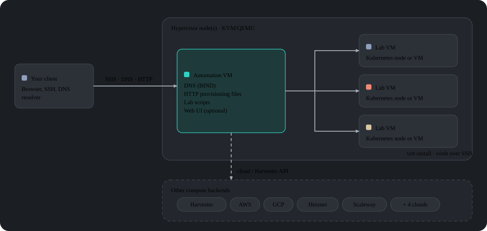
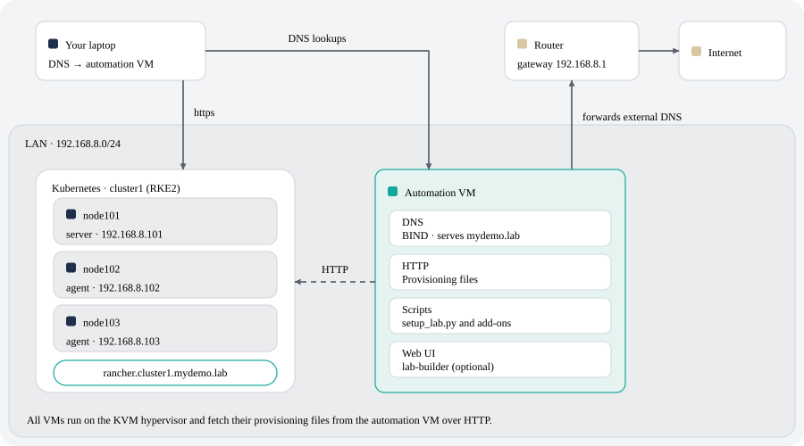
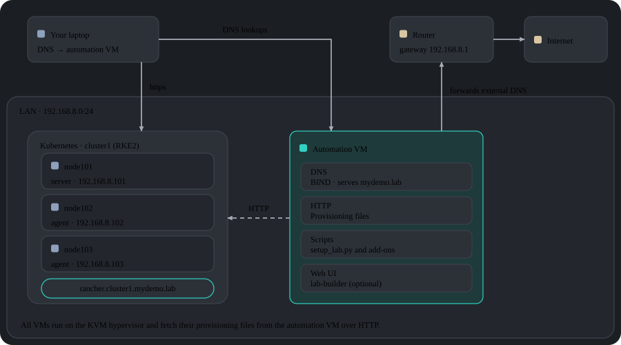

lab-in-a-boxを選ぶ理由は？
- 1つのファイル、1つのコマンド。 VM、Kubernetesクラスター（RKE2またはK3s）、およびアドオンを宣言的に記述します。
setup_lab.pyは依存関係の順序で作成し、virt-installまたはAnsibleを手動で実行する必要はありません。 - 自宅またはクラウド内のラボ、同じ定義。 ラボのVMは所有するKVMホスト、Harvester HCI、またはAWS、Google Cloud、Alibaba Cloud、Hetzner、Scaleway、UpCloud、OVHcloud、Exoscaleで実行されます。ラボは複数のKVMホストに拡張でき、単一のラボはクラウド間WireGuardオーバーレイを介してクラウドと場所を組み合わせることができます。
- 72個の事前統合されたアドオン。 Rancher、Longhorn、NeuVector、Harbor、Keycloak、Jenkins、Argo CD、SUSE Multi-Linux Manager/Uyuni、Nextcloudなど、セキュリティトレーニング用の意図的に脆弱なデモアプリケーション付き。
- コードに従うウェブインターフェイス。 lab-builderは各フォームをアドオンのスキーマから直接レンダリングします。スクリプトに新しいフィールドが追加されると、フロントエンドを変更することなくUIに表示されます。
- 交換可能なプロビジョニング。 SLE Micro用のIgnitionおよびCombustion、openSUSEおよびUbuntu用のcloud-init、古いイメージ用の
virt-customize、または実際のインストールISOからのスクリプト実行インストール（AutoYaST、Kickstart、PreseedまたはAutoInstall）。 - ラボファイルの外の認証情報。 クラウドおよびサービスの認証情報は、アカウントごとに暗号化されたファイルに存在できます（Argon2idキー派生に続いてAES-256-GCMおよびChaCha20-Poly1305がカスケード）。
- コンテナ化テスト。 各チェックは独立した使い捨て
podmanコンテナで実行され、プリコミットフックは関連するチェックを実行します。
目次
- アーキテクチャ
- 動作方法
- クイックスタート
- ウェブインターフェイス（lab-builder）
- ラボ定義フォーマット
- 例
- 段階的なチュートリアル
- 利用可能なコマンド
- 利用可能なアドオン
- 設定リファレンス
- テスト
- 貢献/開発者セットアップ
アーキテクチャ
システムは2層アーキテクチャに基づいています：




ハイパーバイザーノード
1つ以上の物理マシン（ベアメタル）にKVM/QEMU。各マシンはラボVMをホストし、ソースQCOW2イメージを/var/lib/libvirt/images/sources/に保持します。NUC、ワークステーション、またはKVMを実行できるx86_64マシンで十分です。1つのマシンが提供できるより多くの容量を必要とするラボは、複数のKVMホストに拡張できます—下のマルチホストラボを参照してください。
オートメーションVM
ラボ全体のコントロールプレーンとして機能するハイパーバイザー上の小さなVM。提供します：
- DNS — BIND（
named）はラボドメインを提供し、外部クエリをフォワードします。そのため、すべてのラボホスト名は、それを指すすべてのクライアントから解決されます - HTTP —
/srv/www/htdocs/lab_creation/にプロビジョニングファイル（Ignition、Combustion、cloud-init）を提供します - スクリプト —
/usr/local/bin/にインストールされたすべてのラボ管理コマンド - ウェブインターフェイス（オプション）— lab-builder、lab.jsonファイル用のブラウザベースのデザイナー
すべてのユーザーコマンドはオートメーションVM上で実行されます。ハイパーバイザーまたはハイパーバイザーと作成されたVMにSSH経由で接続します。初期設定後、ハイパーバイザーへの直接アクセスは必要ありません。
エンジンを見る
コマンドラインツールと各アドオンはPython 3.11で、libs/とscripts/に常駐し、/usr/local/lib/lab_creation/にインストールされています。共有ライブラリモジュールの小さなセットの周りに組織されています（lab_creation.py、backends.py、services.py、spacecmd_common.pyなど）。これらは互いに依存していません。VM作成は、libvirt、Harvester、8つのパブリッククラウド（コンピュートバックエンドを参照）の10の実装を持つ交換可能なVMBackendインターフェースを介して実行されます。アドオンとオーケストレーションコードはそれらの間で変わりません。置き換えられたBash実装はlegacy_bash/の下にアーカイブされています—元のinstall_ds389を含む。
動作方法
デプロイメントパイプライン
setup_lab.pyは固定されたフェーズシーケンスを実行します。kclustersセクションのないラボの場合、2つのKubernetesスペシフィックフェーズは完全にスキップされます：


仮想マシンのプロビジョニング
各VCは以下のように作成されます：
1. それをホストするKVMホストを決定する（明示的なkvm_hostフィールド、または空き容量による自動選択—マルチホストラボを参照）
2. ソースQCOW2イメージをそのホストにコピーして拡大する
3. そのconfig_methodに従ってテンプレートからプロビジョニングファイルを生成する
4. BINDにDNSエントリを登録する
5. SSHを介してハイパーバイザーでvirt-installを実行する
6. SSHが利用可能になるまで待つ
プロビジョニング方法はラボのJSON内のconfig_methodで制御されます（ノード単位またはcommon内）：
| 値 | 方法 | 用途 |
|---|---|---|
| (空、デフォルト) | Ignition + Combustion | SLE Micro |
cloud-init |
cloud-init ISO | openSUSE Leap、Ubuntu |
virt_customize |
ハイパーバイザー上で直接QCOW2を変更（virt-customize）—ゲストにIgnition/cloud-initサポートは必要ありません |
CentOS 7、古いRHEL/Debian、またはIgnition/cloud-initのない任意のイメージ |
install_iso |
実際のインストールISOからスクリプト実行インストール（AutoYaST、Kickstart、PreseedまたはAutoInstall、install_type経由で選択） |
他のプロビジョニングパスのない配布 |
コンピュートバックエンド
交換可能なVMBackendインターフェースがノードのVMが作成される場所を決定します。ノードのbackendフィールド（またはバックエンドを意味するcloud_account）から1回解決されます。デフォルトはlibvirtです。各アドオンとオーケストレーションスクリプトは、それが何であれ、同じ方法で解決されたバックエンドと通信します：
| バックエンド | VMが実行される場所 |
|---|---|
libvirt |
オペレーティングするKVM/QEMUハイパーバイザー（デフォルト） |
harvester |
Harvester HCIクラスター、KubeVirt VirtualMachinesとして |
aws |
Amazon EC2 |
gcp |
Google Compute Engine |
alibaba |
Alibaba Cloud ECS |
hetzner |
Hetzner Cloud |
scaleway |
Scaleway Instances |
upcloud |
UpCloud |
ovhcloud |
OVHcloud Public Cloud |
exoscale |
Exoscale |
Kubernetes構成
VMが実行されるようになると、setup_lab.pyはJSONのkclustersセクションに従って各ノードにKubernetesをインストールします。RKE2とK3sの両方がサポートされています。クラスターの準備ができたら、そのアドオンが順序立てて実行されます。VMレベルのアドオン（クラスターではなく個々のノードに割り当てられる）は、そのノードがプロビジョニングされた後で実行されます。
クイックスタート
要件
- KVMを実行できるマシン（Intel VT-xまたはAMD-V有効）
- パッケージとイメージをダウンロードするためのインターネットアクセス（またはローカルミラー）
- ハイパーバイザー上の
/var/lib/libvirt/images/sources/に選択したOSのQCOW2イメージ
テスト済みイメージ： - SLE Micro—推奨、Ignition+Combustion付きで使用 - openSUSE Leap Micro—サポート、cloud-init付きで使用
ステップ1—ハイパーバイザーOSを準備する
SLESまたは別のKVM対応Linux配布をハードウェアにインストールします。インストール中に選択します：
- ネットワーキング：ブリッジ（br0）を作成して、メインNICに接続して固定IPを取得
- システムロール：KVM仮想化ホスト
ステップ2—セットアップスクリプトをブートストラップする
ハイパーバイザーへのSSHアクセスを持つLinuxマシンから：
curl https://raw.githubusercontent.com/SUSE-Technical-Marketing/lab-in-a-box/main/install_demo_server_scripts.sh | bash -
これはセットアップスクリプトを/var/tmp/setup_demo_server/にダウンロードします。
ステップ3—KVMノード構成を構成して実行する
cd /var/tmp/setup_demo_server/setup_demo_server/
vim lab.cfg
その後、構成を実行します（<IP>をハイパーバイザーのIPで置き換えるか、ローカルでは省略）：
./setup_kvm_node.py <IP>
これはオートメーションVMをプロビジョニングし、必要なすべてのサービスを開始します。
ステップ4—オートメーションVMを構成する
オートメーションVMにSSH接続し、ラボスクリプトをインストールします：
ssh <AUTOMATION_HOSTNAME>
./install_automation_node_scripts.sh
cp /etc/lab_creation.cfg.example /etc/lab_creation.cfg
vim /etc/lab_creation.cfg
ステップ5—クライアントDNスをオートメーションVMに指す
デスクトップからホスト名を解決するには：
# Linux（NetworkManager）：
nmcli con mod <connection> ipv4.dns <AUTOMATION_IP>
# または/etc/resolv.confに追加：
nameserver <AUTOMATION_IP>
ステップ6—最初のラボを構築する
setup_lab.py examples/cluster.json.template
以下の例でより多くの開始点を見つけられます。または、JSONを手動で記述する代わりにウェブインターフェイスを開くことができます。
ウェブインターフェイス（lab-builder）
lab.jsonファイルデザイナーはブラウザベースで、実行時にプロジェクト独自のPythonライブラリを評価します。任意のアドオンについての組み込みの知識はありません。コンポーネントを選択すると、フォームがそのスキーマから直接レンダリングされます。スクリプトにフィールドを追加すると、UIはフロントエンドを変更することなくそれを表示します。
# それを試す最速の方法—Python以外の依存なし：
python3.11 webui/run-local.py # → http://localhost:8677/
本番環境（Apache、または自動署名証明書とHTTPS）については、README.webui.mdを参照してください。3つの操作モード、HTTP API、トラブルシューティングについて説明しています。
ラボ定義形式
ラボはJSONまたはYAMLファイルとして定義されます（自動検出、下の注記を参照）。現在の形式はラボごとに複数のKubernetesクラスターをサポートします（kclusters）。単一クラスター（cluster）の形式はexamples/cluster.json.templateにあります。
より詳細な手順、リファレンス、例はGitHubの完全なドキュメントにあります。
テスト
各チェックはその独立した使い捨てpodmanコンテナで実行されます：
tests/run_tests.sh
貢献/開発者セットアップ
完全なガイドについてはCONTRIBUTING.mdをGitHubで参照してください。